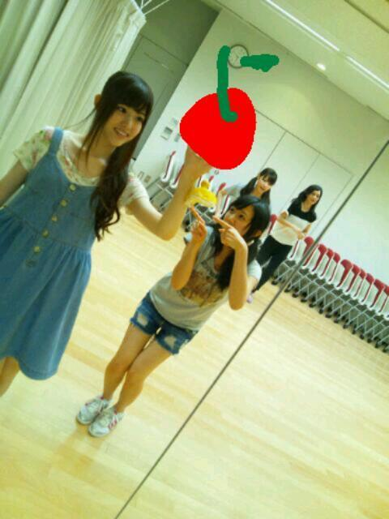

2012/0723Mon今、ほしいものっ(o・・o)
こんにゃくっ(o・・o)
さゆりんごっ(o・・o)
やっほー
さゆりんやでな〜っ(o・・o)/
早速質問たいむいっちゃうよー(・∀・)☆
Ｑ、英単語はどうやって覚えてる？
Ａ、まっちゅんはね〜
まずは書かないで、見て
単語を記号みたいに覚えてるかも〜
ん〜なんていったらいいんか
よくわからん〜(>_<)
でも覚えにくいやつは
いっぱい書くよーヽ(・∀・)ノ
家でやるときは小さく声だしながら(笑)
あと、寝る直前はうちは暗記の時間にしてましたー(*^^*)
このやり方がいいかの保証はありません(・ω・)ｂグッ
ｑ、ほんまにバレー部でキャプテンやったん？
ａ、えーほんまよ〜(>_<)
中学ん時やけどね(*^^*)
実はスポーツ少女やったんよっ(o・・o)
ｑ、今期のみてるアニメは？
ａ、色々あるんやけど
ソードアートオンライン面白い！
アニメみてる方
お話しましょう！
ｑ、好きなディズニーキャラクターは？
ａ、あれ！
ユニベアシティ！
かわいい(*^^*)!!好きです!!
あとダッフィーも好き(>_<)**
あとあと！
ディズニープリンセスは
全体的に好きです(>_<)***
とりあえず、くまさんとお姫様が好きなんよ〜( *・ω・)ノ
うさぎさんも好き(>_<)
ｑ、腕立てか背筋どっちからするべき？
ａ、それは腕立てやね！
なぜなら、さゆりんが背筋きらいやから！
うちもムキムキなんぞー(*^^*)！
ｑ、たけのこの里かきのこの里どっちが好き？
ａ、たけのこの里！
最近はチョコミント味にはまってます！
チョコミント好きなんよー(*^^*)
ｑ、落ち込むことある？
ａ、あるよー(*^^*)
ってか毎日、その日のことを
思い返しては落ち込むよー(´；ω；`)
あのときはあぁしたら
良かったー(´；ω；`)とかね(>_<)
一人の時はめっちゃ落ち込んでばっかりやけど
誰かとおる時は
めっちゃポジティブなんよー(・_・;
うちはほんまに人に支えられてる♪
Ｑ、元気を出したいときは
何をする？
Ａ、笑うー(*^^*)！
別に面白いことなくても
あはははー(*^^*)って言ってみる！
笑った顔をしてみる！
そしたら何かよくわからんけど
楽しくなる〜＼(^-^)／
箸が転がっただけで笑えるー(*^^*)
世界一幸せな人になるよー(*^^*)！
ってなわけで
少しずつ答えていきたいと思います！
遅くなっちゃうけど
待っててくださると嬉しいです(´；ω；`)
すみません(T-T)
最近は感動する映画をみようと思って
ギャグ漫画日和をみましたー(*^^*)
感動する映画が思いつかなかった...
良かったら、これは泣けるよ！っていう
映画教えてください！
今日はろってぃの誕生日☆
歌やダンスが大好きで
笑顔がかわいいろってぃ
大好きよ♪
さゆりんの私服！withせいらりん♪
もはや私服わからん。笑

ほなら、またねー(*^^*)
おやすみなさゆりん♪
2012/07/23 22:48
コメント(461)
さゆりんがもっと更新率あげてくれたら嬉しいなー
英単語はそれで覚えれるとか羨ましい
あっ大阪桐蔭高校順調に勝っているね！
英単語はそれで覚えれるとか羨ましい
あっ大阪桐蔭高校順調に勝っているね！
これからも応援してるので頑張ってください(^_^)ゞ
おっくんりんごぱんち ◎≧▽≦)o
来週クッキングモンスター炸裂
楽しみにしとるわ(￣ー￣)
もっと料理うまくなれー
やないと、まっつんのこと好きになれへん
さゆりんバレー部やったんや！
写メの私服可愛いなー
写メの私服可愛いなー
やっほー(^-^)
ギャグ漫画日和少ししか見たことない(>_<)
でもおもしろいよね♪
映画は『恋空』が感動するよ！
しつもーん＼(^o^)／
犬に名前つけようと思っとんじゃけど
どんな名前がいいと思う？
ギャグ漫画日和少ししか見たことない(>_<)
でもおもしろいよね♪
映画は『恋空』が感動するよ！
しつもーん＼(^o^)／
犬に名前つけようと思っとんじゃけど
どんな名前がいいと思う？
質問回答待ってるねっ´。・Q・。｀☆ミミ
てかさゆリんの私服可愛いっ！゛
さゆリんの笑顔めっちや好き。こっちも笑顔になる-っ。!!
泣ける映画は‥天使の恋とか？色々かなあ。恋愛系好きだけど‥。
まっちゅんヤッホー
感動する映画にギャグ漫画日和をチョイスするとは流石やな(笑)
映画わからん(T_T)
けどクレヨンしんちゃんの映画は感動したw
まあまっちゅんも好きなら知ってるかw
乃木どこの蟻地獄見たけどとてもスポーツ少女とは思えんかったよ(笑)
ほなねﾉｼ
感動する映画にギャグ漫画日和をチョイスするとは流石やな(笑)
映画わからん(T_T)
けどクレヨンしんちゃんの映画は感動したw
まあまっちゅんも好きなら知ってるかw
乃木どこの蟻地獄見たけどとてもスポーツ少女とは思えんかったよ(笑)
ほなねﾉｼ
初コメ～＼(^o^)／
バレー部のキャプテンとか意外だねっ！
なんか運動できそうにないのに…笑
あっ、でも背高いもんね！
俺もたけのこの里派
なぜかというと、きのこの山よりチョコの部分が多いから♪(´ε｀ )
最近話題となっている海猿は泣けるんじゃないかな～
俺はまだ見に行けてないから早く見たいヽ(´∀｀)ノ
明日も頑張りましょー！
さゆりんお疲れ様*･゜ﾟ･*:.｡..｡.:*･'(*ﾟ▽ﾟ*)'･*:.｡. .｡.:*･゜ﾟ･*
こんばんごっ(o・・o)
絶賛さゆりん不足(＞＜)
とりあえず、あと4日頑張りんごするわ
今、仕事でちょっとした壁にぶつかってるので、若干やつれてるかもしれんけど(笑)
まあ、さゆりんに会えば吹っ切れるでしょ←
ではでは
絶賛さゆりん不足(＞＜)
とりあえず、あと4日頑張りんごするわ
今、仕事でちょっとした壁にぶつかってるので、若干やつれてるかもしれんけど(笑)
まあ、さゆりんに会えば吹っ切れるでしょ←
ではでは
さゆりんご！
乃木どこ？観たよ。
蟻地獄っ！！
さゆりんごやっぱり運動神経ないでしょ！
本当に本当にスポーツ少女だったのー。
( -_-)じーーー！
あっ乳しぼり！
(o‘∀‘o)
ばいなら！
p(^^)q
乃木どこ？観たよ。
蟻地獄っ！！
さゆりんごやっぱり運動神経ないでしょ！
本当に本当にスポーツ少女だったのー。
( -_-)じーーー！
あっ乳しぼり！
(o‘∀‘o)
ばいなら！
p(^^)q
ウルルの森っちゅーのがなくよ！しんちゃんのケツだけ爆弾もなけたけど(T-T)
ぱんくんコーデにあいそーやね☆
ぱんくんコーデにあいそーやね☆
天使にラブソングを２は
感動できるし面白いと思うな。
もし観た事ないなら、是非。
あ、でももし観るなら１から観てね。
そのほうが絶対楽しめるから。
感動できるし面白いと思うな。
もし観た事ないなら、是非。
あ、でももし観るなら１から観てね。
そのほうが絶対楽しめるから。
初コメです。
前までは、まいやん推しやったけど、今ではさゆりん単推しです
さゆりんは関西弁で喋ってるから、めっちゃ親近感が湧くわ
俺も奈良やねん。
今は、浪人中・・・
さゆりんを見てたら、元気が湧いてきて頑張れるよ～
また、手紙も送るし、握手会も大阪のに行けたらいくな
ｂｙ さゆりん大好き いっちー より
前までは、まいやん推しやったけど、今ではさゆりん単推しです
さゆりんは関西弁で喋ってるから、めっちゃ親近感が湧くわ
俺も奈良やねん。
今は、浪人中・・・
さゆりんを見てたら、元気が湧いてきて頑張れるよ～
また、手紙も送るし、握手会も大阪のに行けたらいくな
ｂｙ さゆりん大好き いっちー より
今日もつかるたー(__)
質問
すきなマニアック駄菓子!!
質問
すきなマニアック駄菓子!!
こんばん…ん？こんにゃく？
昨日の乃木どこ見たよー
それを踏まえた上でさゆりんがスポーツ少女…？
し…信じられん←
りんごはたけのこ派か…俺はキノコ派です(・∀・)
さゆりん強い人だねー俺も１人になった途端落ち込む派だけど(´・_・｀)
元気を出すときに笑うとか…さゆりんほんまめっちゃいい子やん！
ポジティブ！さすがりんご～～
そーかそーか感動する映画をみようとギャグ漫画日和を…ん？
……それギャグ漫画やー！っていうつまらないツッコミはおいといて←
映画はねー…邦画なら「手紙」洋画なら古いけど「ターナ＆フーチ」かなー洋画の方オススメだよー笑いあり涙ありの感動ストーリーやで(´;ω;`)
ほんならおやすみ～～また！
昨日の乃木どこ見たよー
それを踏まえた上でさゆりんがスポーツ少女…？
し…信じられん←
りんごはたけのこ派か…俺はキノコ派です(・∀・)
さゆりん強い人だねー俺も１人になった途端落ち込む派だけど(´・_・｀)
元気を出すときに笑うとか…さゆりんほんまめっちゃいい子やん！
ポジティブ！さすがりんご～～
そーかそーか感動する映画をみようとギャグ漫画日和を…ん？
……それギャグ漫画やー！っていうつまらないツッコミはおいといて←
映画はねー…邦画なら「手紙」洋画なら古いけど「ターナ＆フーチ」かなー洋画の方オススメだよー笑いあり涙ありの感動ストーリーやで(´;ω;`)
ほんならおやすみ～～また！
ソードアートオンライン面白いよね(^^)
うぽって
エウレカセブンＡＯ
ガンダムＡＧＥ
じょしらく
トータルイクリプス
貧乏神が
ゆるゆり
辺りもチェックはしてるよ～！
握手会で早く二次元トークしたい(>_<)
うぽって
エウレカセブンＡＯ
ガンダムＡＧＥ
じょしらく
トータルイクリプス
貧乏神が
ゆるゆり
辺りもチェックはしてるよ～！
握手会で早く二次元トークしたい(>_<)
さゆりん相変わらずかわいいな～(^-^)
ここで質問好きな言葉は??
ここで質問好きな言葉は??
海猿です！
やったーさゆりんのブログみれたみれた！
嬉しい。涙が(T_T)
待ってるよー
いつまでもww
質問するね
テニスできる？
待ってるよー
さゆりん私服きゃわたん///
ださいとか言われてたけどださいとは思わないよ！
じゃあね♪
嬉しい。涙が(T_T)
待ってるよー
いつまでもww
質問するね
テニスできる？
待ってるよー
さゆりん私服きゃわたん///
ださいとか言われてたけどださいとは思わないよ！
じゃあね♪
さゆちゃんの質問返し面白いなぁ～☆
でも「きのこの里」ってお菓子あるん？？笑
ちなみに僕はきのこ派です♪
さゆりん、こんばんご～！
(^O^)/
質問返しお疲れちゃんね～！
ってか、さゆりんは寝る前に暗記してたんか？
睡魔に襲われんかったか？
俺だったら間違いなくバタンキューやな(笑)
で、さゆりんもムキムキになんのかいな！
ななみんも鍛えるとか言ってたし、乃木坂は筋トレブームなん？
f(^ー^;
それと、たけのこの里にチョコミント味なんてあんの？ビミョー・・・
(￣▽￣;)
俺、チョコミント苦手なんよ
(-_-;)
ちなみに俺が初めて泣いた映画は"世界の中心で愛を叫ぶ"だよ！
コレは何回見ても泣ける！
良かったら見てみてね！
じゃ、今日も１日お疲れちゃん！
ばいりんご～！
(o・・o)/~~~
(^O^)/
質問返しお疲れちゃんね～！
ってか、さゆりんは寝る前に暗記してたんか？
睡魔に襲われんかったか？
俺だったら間違いなくバタンキューやな(笑)
で、さゆりんもムキムキになんのかいな！
ななみんも鍛えるとか言ってたし、乃木坂は筋トレブームなん？
f(^ー^;
それと、たけのこの里にチョコミント味なんてあんの？ビミョー・・・
(￣▽￣;)
俺、チョコミント苦手なんよ
(-_-;)
ちなみに俺が初めて泣いた映画は"世界の中心で愛を叫ぶ"だよ！
コレは何回見ても泣ける！
良かったら見てみてね！
じゃ、今日も１日お疲れちゃん！
ばいりんご～！
(o・・o)/~~~
こんばんはっー！！
こ、こんにゃく欲しいんですか？？（笑）
質問の返答、ありがとうございます！！
自分のペースで答えてくださいね！！
ギャグ漫画日和！！！
レッツ剛田というキャラがいるんですが知ってますか！？（笑）
いやー久しぶりに読みたくなりました！
クレヨンしんちゃんの戦国時代の映画は本当に感動しました。
BALLAD 名もなき恋の歌 という形で実写化されているので是非！！！
こ、こんにゃく欲しいんですか？？（笑）
質問の返答、ありがとうございます！！
自分のペースで答えてくださいね！！
ギャグ漫画日和！！！
レッツ剛田というキャラがいるんですが知ってますか！？（笑）
いやー久しぶりに読みたくなりました！
クレヨンしんちゃんの戦国時代の映画は本当に感動しました。
BALLAD 名もなき恋の歌 という形で実写化されているので是非！！！
後ろで、ダンスレッスンしてるのに、
なに遊んでるの！(>_<)
しかし、ホントにスポーツ少女だったのか？
アリジゴクから抜け出せなかったあの姿を見る限り
ちょっと信じられない｡｡｡(+_+)
｢もっとがんばりましょう！｣（笑）
そして！
こらっ！
｢おやすみなさゆりん｣て｡｡｡(^-^;
さゆにゃんのお許しはもらったの？
なに遊んでるの！(>_<)
しかし、ホントにスポーツ少女だったのか？
アリジゴクから抜け出せなかったあの姿を見る限り
ちょっと信じられない｡｡｡(+_+)
｢もっとがんばりましょう！｣（笑）
そして！
こらっ！
｢おやすみなさゆりん｣て｡｡｡(^-^;
さゆにゃんのお許しはもらったの？
質問返し
気長に待ってるね♪
泣ける映画と言えば
海猿しか!!!
今映画館でやってる海猿見て
泣かん人いないと思うよまじ！
おすすめするー
鹿児島のゆりなあたあ (･ω･)ﾉｼ
さゆりん、こんばんわ～。
更新待ってたよー。
まず、泣ける映画、握手会で『カラフル』って言ったじゃん～ｗ
原恵一さんって監督で、クレヨンしんちゃんの『暗黒タマタマ』から『アッパレ！戦国大合戦』まで、監督されてた人だよー。
もう、それだけで泣けない？(笑)
最近は、滋賀県とか、色々な所でいじめが問題になってるけど、この作品は、その問題を正面から捉えて、命の素晴らしさとか、友達の素晴らしさを訴えてる。
こんな時期だからこそ、全国の中学生に見て欲しい作品。本当に。
俺は、泣けるっていう観点で言えば、この作品を超える映画は今の所知らないかなぁ。
クレヨンしんちゃん好きなら、本当に見て欲しいんだよねー。
テレビシリーズなら、『Air』と『天元突破グレンラガン』が泣けるｗ
でも、泣ける映画・・・からの『日和』見たは吹いたｗｗ
面白かったよｗ
ちょっと、質問回答見てたら、コメントしたいこといっぱいある～ｗ
回数分けてコメントしてみよかなｗ
特に、アニメの話はしたいこといっぱいあるな～ｗ
でも、直に話す機会ってなると、握手会とか中々無いのよなぁ・・・。
じゃあ、今日はこの辺で～。また、明日コメントつけようかなｗ
Ps.チョコミントはアイスの中で一番ｗ歯磨き粉じゃないよねｗ
更新待ってたよー。
まず、泣ける映画、握手会で『カラフル』って言ったじゃん～ｗ
原恵一さんって監督で、クレヨンしんちゃんの『暗黒タマタマ』から『アッパレ！戦国大合戦』まで、監督されてた人だよー。
もう、それだけで泣けない？(笑)
最近は、滋賀県とか、色々な所でいじめが問題になってるけど、この作品は、その問題を正面から捉えて、命の素晴らしさとか、友達の素晴らしさを訴えてる。
こんな時期だからこそ、全国の中学生に見て欲しい作品。本当に。
俺は、泣けるっていう観点で言えば、この作品を超える映画は今の所知らないかなぁ。
クレヨンしんちゃん好きなら、本当に見て欲しいんだよねー。
テレビシリーズなら、『Air』と『天元突破グレンラガン』が泣けるｗ
でも、泣ける映画・・・からの『日和』見たは吹いたｗｗ
面白かったよｗ
ちょっと、質問回答見てたら、コメントしたいこといっぱいある～ｗ
回数分けてコメントしてみよかなｗ
特に、アニメの話はしたいこといっぱいあるな～ｗ
でも、直に話す機会ってなると、握手会とか中々無いのよなぁ・・・。
じゃあ、今日はこの辺で～。また、明日コメントつけようかなｗ
Ps.チョコミントはアイスの中で一番ｗ歯磨き粉じゃないよねｗ
こんばんりんごヨーグルトーっ(^o^)/
落ち込んでるさゆりんより
やっぱり、笑ってるさゆりんのほうが想像しやすいな(笑)
それにさゆりんの笑った顔でこっちも元気になれる！
泣けるかどうかは？だけど
アルマゲドンとか良いと思う
落ち込んでるさゆりんより
やっぱり、笑ってるさゆりんのほうが想像しやすいな(笑)
それにさゆりんの笑った顔でこっちも元気になれる！
泣けるかどうかは？だけど
アルマゲドンとか良いと思う
こんにゃくっ？
こんばんりんごっ(o・・o)
まっつんからまっつんへ
今日もお疲れ様やったね。
昨日の乃木どこはキャンプやったね。
さゆりんがすり鉢状の所を登れんかったのは予想どおりやったでｗ
来週はえらい事なりそうやなぁ…
楽しみにしとくね。
メガシャキ始まったね。
仕事で疲れた時は飲みますよ～
あ、さゆりんは服のサイズSでええんかな？
ということで、今週会えるように祈ってほしいなー
ではでは！
こんばんりんごっ(o・・o)
まっつんからまっつんへ
今日もお疲れ様やったね。
昨日の乃木どこはキャンプやったね。
さゆりんがすり鉢状の所を登れんかったのは予想どおりやったでｗ
来週はえらい事なりそうやなぁ…
楽しみにしとくね。
メガシャキ始まったね。
仕事で疲れた時は飲みますよ～
あ、さゆりんは服のサイズSでええんかな？
ということで、今週会えるように祈ってほしいなー
ではでは！
笑って泣ける『ライフイズビューティフル』っていうイタリア映画をオススメしたい、ヤスダです。
AKBさんのドキュメント映画第２弾も泣けました(T-T)
AKBさんのドキュメント映画第２弾も泣けました(T-T)
さゆりんごー♪
はじめてコメントしたかも！笑
昨日の乃木どこのさゆりん可愛かったよ(*´Д`*)
トイレットペーパー爆笑しちゃった！笑
ギャグ漫画日和しってる！！
すごい笑えるやつだ｡+ﾟ(*ﾉ∀`*)｡+ﾟ
質問思いつかないから、、、また明日～ヽ( ´ー｀)ノ笑
おやすみなさゆりん♪
どうもー初コメです
英単語の暗記方法の伝授ありがとうございます！
頑張っちゃいます～
よろしくです♪
英単語の暗記方法の伝授ありがとうございます！
頑張っちゃいます～
よろしくです♪
質問
さゆりんって本当に&sF9E5;(林檎)好きなの?
さゆりんって本当に&sF9E5;(林檎)好きなの?
「乃木どこ」のキャンプの回、見たよ！
蟻地獄（？）で四苦八苦して、レッドチームみんな道連れにしちゃうさゆりんご、おもしろかった～
来週はさゆりん得意（？）の料理があるから、また楽しみ！ 早く来週の日曜日、来い！
今日のブログ、「元気を出したいときは、とりあえず笑う」っていうさゆりんの言葉に、はっとさせられました。
他の人に言われても何とも思わなかったかもしれないけど、さゆりんごに言われると、ああそうかって心から納得してしまうから不思議です。なんでなんやろ～？
って、不思議でも何でもないですね。いつもニコニコして楽しそうなさゆりんごを見たら、笑顔の効果は誰でも納得しちゃいます。
そうそう、泣ける映画のお勧めは、「ショーシャンクの空に」です。有名な映画だから、もう見たことあるかな？ もしまだだったら、ぜひ！
暑さに負けんようにね。ほな！
蟻地獄（？）で四苦八苦して、レッドチームみんな道連れにしちゃうさゆりんご、おもしろかった～
来週はさゆりん得意（？）の料理があるから、また楽しみ！ 早く来週の日曜日、来い！
今日のブログ、「元気を出したいときは、とりあえず笑う」っていうさゆりんの言葉に、はっとさせられました。
他の人に言われても何とも思わなかったかもしれないけど、さゆりんごに言われると、ああそうかって心から納得してしまうから不思議です。なんでなんやろ～？
って、不思議でも何でもないですね。いつもニコニコして楽しそうなさゆりんごを見たら、笑顔の効果は誰でも納得しちゃいます。
そうそう、泣ける映画のお勧めは、「ショーシャンクの空に」です。有名な映画だから、もう見たことあるかな？ もしまだだったら、ぜひ！
暑さに負けんようにね。ほな！
さゆりんご(^O^)
さゆりんはめっちゃ元気だから
いっつも元気分けてもらってるよ！
さゆりんが元気ないときは
俺が支えるし嫌だって程
元気分けてあげる(笑）
ホントに応援してるし
これからもずっと応援するよ
映画じゃないけど
JUJUさんの【奇跡を望むなら】のPVは号泣なのだ。有名だけどね！
あと、東京ガスの【家族の絆】編のCMも泣ける。
週一で見ては涙を流しているのです(つд・)
JUJUさんの【奇跡を望むなら】のPVは号泣なのだ。有名だけどね！
あと、東京ガスの【家族の絆】編のCMも泣ける。
週一で見ては涙を流しているのです(つд・)
さゆりんがバレーは意外～
予想外だったわ
自分は学生の時文化部所属だったけどね（笑）もし学生に戻れるんだったら運動部入りたいな♪
入るんだったらバスケ部に入りたいな&iF8B9;
そんじゃお休み～
いい夢みろよ！←柳沢慎吾風に（笑）
予想外だったわ
自分は学生の時文化部所属だったけどね（笑）もし学生に戻れるんだったら運動部入りたいな♪
入るんだったらバスケ部に入りたいな&iF8B9;
そんじゃお休み～
いい夢みろよ！←柳沢慎吾風に（笑）
「陰日向に咲く」は
ひとりで号泣した！
おすすめだよ！
さゆりん、初コメです！
泣ける映画
ドキュメンタリーAKB48、
秋元作品
象の背中
古いところでは
パーフェクトワールド
パーフェクト～はかなり前のケビンコスナーの映画だけど観るたんびに泣いたよ。
皆の書き込みたのしみですね
泣ける映画
ドキュメンタリーAKB48、
秋元作品
象の背中
古いところでは
パーフェクトワールド
パーフェクト～はかなり前のケビンコスナーの映画だけど観るたんびに泣いたよ。
皆の書き込みたのしみですね
さゆりんやっほい＼(^o^)／
今日はちみつ食べたよ(*^^*)
とゆより飲んだｗｗ
なんの報告ってゆう←
今ほしいもの…
それわ
さゆりんご(照)
甘いのかしら？
なんたって
はちみつ入りよね？(((o(*ﾟ▽ﾟ*)o)))
ほなまたねー！
さゆりんごぱーんち
 はちみつ入り
はちみつ入り
☆☆☆☆☆中野のプーさん☆☆☆☆☆
今日はちみつ食べたよ(*^^*)
とゆより飲んだｗｗ
なんの報告ってゆう←
今ほしいもの…
それわ
さゆりんご(照)
甘いのかしら？
なんたって
はちみつ入りよね？(((o(*ﾟ▽ﾟ*)o)))
ほなまたねー！
さゆりんごぱーんち
☆☆☆☆☆中野のプーさん☆☆☆☆☆
りんごだよ！
さゆりんごではありません(笑)
さゆりんごかわいいよー(~o~)
さゆりんごのもう１つのあだなのまっつんあるやん!(^^)!
それな、私の担任とあだなが一緒なの…(._.)φ
全部が対象やけど(笑)
ほなまたー(*^｡^*)
さゆりんごではありません(笑)
さゆりんごかわいいよー(~o~)
さゆりんごのもう１つのあだなのまっつんあるやん!(^^)!
それな、私の担任とあだなが一緒なの…(._.)φ
全部が対象やけど(笑)
ほなまたー(*^｡^*)
ギャグ漫画日和って・・・いいの選びますね（笑）
泣ける映画はぁ・・・宮崎あおいさん主演の「ソラニン」
どおでしょうか？
僕は映画館で彼女も、そして自分でも引くくらい泣きましたが（笑）
質問回答がんばってくださいー！
回答おもろいから楽しみです～！！
泣ける映画はぁ・・・宮崎あおいさん主演の「ソラニン」
どおでしょうか？
僕は映画館で彼女も、そして自分でも引くくらい泣きましたが（笑）
質問回答がんばってくださいー！
回答おもろいから楽しみです～！！
さゆりん～、こんばんご～(っ>ﾛ□▽□∀∀□U<)♪♪
オススメだよ〜！！！
オススメだよ〜！！！
こんばんごっ！
泣ける映画はやっぱ海猿やで！
さゆりんも、あと1ヶ月で誕生日やん(^O^)／
泣ける映画はやっぱ海猿やで！
さゆりんも、あと1ヶ月で誕生日やん(^O^)／
前の握手会のときにさゆりんから教えてもらった
オススメの漫画まだ読めてないんだ(>_<)
今度、漫画喫茶に行って読んでくるね(*^◯^*)
昨日の乃木どこ楽しかった‼
来週のさゆりんの料理が楽しみ(￣▽￣)
オススメの漫画まだ読めてないんだ(>_<)
今度、漫画喫茶に行って読んでくるね(*^◯^*)
昨日の乃木どこ楽しかった‼
来週のさゆりんの料理が楽しみ(￣▽￣)
ディズニーキャラのおすすめ！
チャンドゥってキャラかわいいよ！
ディズニーシーのシンドバッドって乗り物のとこに出てくるトラのキャラ！
俺の推しキャラです(・∀・)
さゆりんは笑い方特徴的だよねw
それがめっちゃ好きなんだけどw
ギャグ漫画日和はガチ！！
とりあえず笑えるねw
チャンドゥってキャラかわいいよ！
ディズニーシーのシンドバッドって乗り物のとこに出てくるトラのキャラ！
俺の推しキャラです(・∀・)
さゆりんは笑い方特徴的だよねw
それがめっちゃ好きなんだけどw
ギャグ漫画日和はガチ！！
とりあえず笑えるねw
今日もお疲れ様(*ﾟ▽ﾟ)ﾉ
俺は去年受験生やってんけど単語は寝る前と起きた後がいいらしいよー(*´▽｀*)
さゆりん知らんうちに効率的な覚え方してたね(笑)
天才やぁー(￣∇￣)
さゆりんが笑顔になってるの見るとほんと癒されるよ(´▽｀)
さゆりんこんばんは(^ ^)
質問返しお疲れ様m(_ _)m
昨夜のキャンプロケ見たよ(^_^)
なんかリーダーのわりには足引っ張ってたような？
気のせいか（ーー；）
ところで食いしん坊のさゆりんに質問が(^_^)
さゆりんはこれだったら毎日三食食べても飽きないだろう、つて食べ物ある？
質問返しお疲れ様m(_ _)m
昨夜のキャンプロケ見たよ(^_^)
なんかリーダーのわりには足引っ張ってたような？
気のせいか（ーー；）
ところで食いしん坊のさゆりんに質問が(^_^)
さゆりんはこれだったら毎日三食食べても飽きないだろう、つて食べ物ある？
こんばんはー！
夜は日本史やってる(笑)
ソードアートオンラインはホンマにいいよなー♪
小説読んでる？
読んでなかったらオススメ！
泣ける映画はやっぱり
トイストーリー３かな？
俺のめっちゃ好きな映画やから！
たけのこの里塾の帰りに買って帰ろ！笑
ほなねー！
夜は日本史やってる(笑)
ソードアートオンラインはホンマにいいよなー♪
小説読んでる？
読んでなかったらオススメ！
泣ける映画はやっぱり
トイストーリー３かな？
俺のめっちゃ好きな映画やから！
たけのこの里塾の帰りに買って帰ろ！笑
ほなねー！


ボクもさゆりんごの笑顔好きです(｀・ω・´)